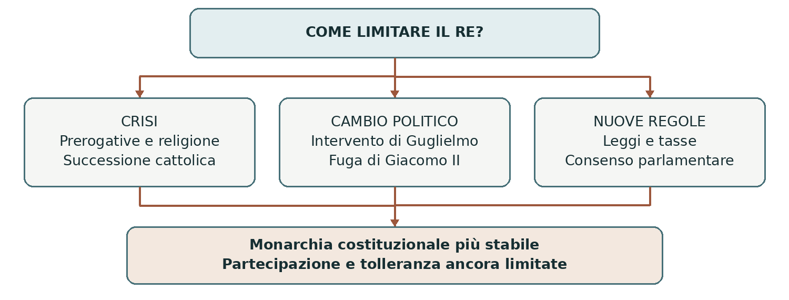

LA GLORIOSA RIVOLUZIONE 1688–1689
La seconda rivoluzione inglese
La seconda rivoluzione inglese sostituì Giacomo II con Guglielmo III d’Orange e Maria II e rafforzò i limiti giuridici del potere monarchico. Il Bill of Rights del 1689 tutelò prerogative parlamentari e alcune libertà dei sudditi. Il nuovo sistema rimase però sociale e religioso nella sua selettività: non era ancora una democrazia né una piena monarchia parlamentare nel senso odierno.
0. Domanda generatrice
Come si può limitare stabilmente il potere del re senza abolire la monarchia?
In sintesi La soluzione del 1689 combinò cambio dinastico e regole sul governo. Per capirla bisogna osservare ciò che la Restaurazione non aveva risolto.
1. Il mondo precedente
Nel 1660 Carlo II era tornato sul trono dopo la repubblica e il Protettorato. Monarchia, Parlamento e Chiesa anglicana furono ristabiliti, ma restavano tensioni su tasse, religione e successione. L’Habeas Corpus Act del 1679 rafforzò le garanzie contro alcune forme di detenzione arbitraria.
La prospettiva che gli succedesse il fratello cattolico Giacomo alimentò la crisi dell’esclusione. I Whigs
volevano impedirne l’ascesa; i Tories difendevano successione ereditaria e Chiesa anglicana. Erano
raggruppamenti aristocratici e politici in formazione, non partiti moderni con iscritti e programmi
uniformi. Non corrispondevano semplicemente a mercanti da una parte e proprietari terrieri dall’altra.
In sintesi La memoria della guerra civile rendeva temibili nuove rotture, ma il problema religioso minava la fiducia nella corona. Giacomo II trasformò questi timori in una crisi politica.
2. Le fratture
Divenuto re nel 1685, Giacomo II cercò di rafforzare l’autorità monarchica e di rimuovere restrizioni che colpivano cattolici e dissidenti. Molti oppositori contestavano soprattutto il metodo: il sovrano sospendeva l’applicazione di leggi e favoriva cattolici negli incarichi, facendo temere un governo indipendente dal Parlamento e dalla Chiesa anglicana.
Nel 1688 la nascita di un erede maschio cattolico rese probabile una dinastia duratura, invece della futura successione della figlia protestante Maria. Alcuni esponenti politici inglesi invitarono Guglielmo d’Orange, marito di Maria e avversario della Francia di Luigi XIV, a intervenire. L’operazione univa una crisi interna inglese a un progetto strategico europeo.
In sintesi Una parte delle élite giudicò il cambio di sovrano meno pericoloso della continuazione della politica regia. L’intervento olandese rese concreta questa alternativa.
3. Attori, gruppi e conflitti
Guglielmo disponeva di truppe e di una rete internazionale; gli oppositori inglesi di Giacomo offrivano appoggi politici. La coalizione comprendeva Whigs e Tories, ma non tutti accettarono senza esitazioni la deposizione del re.
| Attori | Obiettivi e interessi |
|---|---|
| Giacomo II | Difendere prerogative e successione; ampliare gli spazi dei cattolici. |
| Guglielmo e Maria | Assumere la corona entro un nuovo assetto politico protestante. |
| Parlamento ed élite inglesi | Tutelare leggi, rappresentanza e sicurezza della Chiesa anglicana. |
| Dissidenti protestanti | Ottenere spazi di culto, senza raggiungere subito parità nell’accesso agli incarichi. |
| Giacobiti | Restare fedeli a Giacomo II e rivendicare i diritti degli Stuart. |
In sintesi L’accordo contro Giacomo non cancellava tutte le differenze. Occorreva definire la legittimità dei nuovi sovrani e le regole della loro azione.
4. Il processo storico
L’intervento del 1688
Guglielmo sbarcò in Inghilterra nel novembre 1688 con un esercito. Defezioni di comandanti e sostenitori
indebolirono Giacomo II, che fuggì in Francia in dicembre. Maria non guidò insieme al marito lo sbarco:
raggiunse l’Inghilterra successivamente.
La rivoluzione fu detta “gloriosa” dalla tradizione favorevole ai vincitori. Il trasferimento del potere in Inghilterra avvenne con combattimenti relativamente limitati, ma l’espressione “senza sangue” nasconde i conflitti successivi in Scozia e soprattutto in Irlanda. Qui la guerra fra giacobiti e sostenitori di Guglielmo proseguì fino al 1691.
La corona e la Dichiarazione dei diritti
Nel 1689 il Parlamento riunito in Convenzione interpretò la fuga di Giacomo come abdicazione e offrì la
corona congiuntamente a Guglielmo e Maria. In febbraio presentò una Dichiarazione dei diritti; in
dicembre, con l’assenso dei sovrani, le sue disposizioni divennero legge nel Bill of Rights.
Il re non poteva sospendere le leggi né riscuotere imposte senza autorizzazione parlamentare. Anche il mantenimento di un esercito permanente in tempo di pace richiedeva consenso. Il documento difendeva elezioni libere da interferenze, riunioni frequenti del Parlamento e libertà di parola nei suoi lavori. Questa libertà parlamentare non era una libertà di espressione universale identica a quella contemporanea.
Un ordine costituzionale con forti limiti
Il Toleration Act del 1689 consentì, a determinate condizioni, il culto a molti dissidenti protestanti. Non
garantì pari diritti a tutti: cattolici e antitrinitari ne restavano esclusi e continuarono restrizioni per
l’accesso agli uffici. La centralità anglicana e la successione protestante restavano elementi del sistema.
Il Parlamento rappresentava soprattutto proprietari ed élite; le donne erano escluse dal voto, come gran parte degli uomini. Il sovrano conservava importanti poteri esecutivi e influiva sul governo. La progressiva responsabilità dei ministri davanti al Parlamento si sviluppò soprattutto nel Settecento: il 1689 pose basi decisive, ma non creò già ogni carattere della monarchia parlamentare moderna.
In sintesi Il nuovo sistema rese più difficile governare contro le leggi e senza il Parlamento. La stabilità dipendeva anche dal controllo delle risorse e delle forze armate.
Lo snodo decisivo
1689: il problema non era soltanto scegliere un altro re, ma impedire che qualunque sovrano potesse ripetere determinate pratiche di governo. Le garanzie divennero parte di una legge.
5. Le fonti in dialogo
Il Bill of Rights del 1689
Fonte: legge del Parlamento inglese approvata nel dicembre 1689 con l’assenso di Guglielmo e Maria. Si rivolgeva alle istituzioni del regno e definiva diritti e regole dopo la crisi di Giacomo II.
Contenuto — sintesi didattica: Sono contestati sospensione delle leggi, tassazione non autorizzata e mantenimento di un esercito permanente in pace senza consenso parlamentare. Sono tutelate elezioni parlamentari libere e libertà di parola nei dibattiti dell’assemblea.
Interpretazione e limiti: Il testo protegge soprattutto un determinato ordine costituzionale. Non stabilisce il voto universale e non abolisce le discriminazioni religiose. Va letto insieme alle regole elettorali e al Toleration Act.
Domanda di lettura: Perché limitare tasse ed esercito rafforza il Parlamento anche quando il re conserva il potere esecutivo?
Fonte — UK Parliament, Bill of Rights 1689
In sintesi Una garanzia costituzionale può essere importante senza essere universale. Questa distinzione permette di valutarne gli effetti storici.
6. Conseguenze e nuovo assetto
Il controllo parlamentare sulle entrate rese più stabile il rapporto fra monarchia, credito e finanziamento della guerra. L’Inghilterra entrò con maggiore forza nelle coalizioni contro Luigi XIV; la sua storia politica si collegò ancora più strettamente alla competizione europea e coloniale.
L’Act of Settlement del 1701 regolò la successione protestante. L’unione politica con la Scozia del 1707 creò il Regno di Gran Bretagna. Nel nuovo contesto si consolidarono gradualmente prassi di governo fondate sulla collaborazione con il Parlamento.
In sintesi La limitazione del sovrano contribuì anche a costruire uno Stato capace di mobilitare risorse. Libertà istituzionali e potenza militare crebbero insieme.
7. Conclusione
La monarchia fu limitata rendendo indispensabile l’accordo con il Parlamento su leggi e risorse. La soluzione garantiva le élite rappresentate e apriva sviluppi futuri, ma lasciava fuori gran parte della popolazione.
Sintesi finale La crisi nacque dal governo di Giacomo II e dal problema della successione. Guglielmo intervenne militarmente nel 1688. Nel 1689 Guglielmo e Maria divennero sovrani congiunti. Il Bill of Rights rafforzò prerogative e garanzie parlamentari. La tolleranza e la partecipazione politica rimasero limitate.
Per studiare e collegare
Coordinate essenziali
Spazio: Inghilterra, con sviluppi in Scozia e Irlanda; rapporto con Province Unite e Francia. Tempo: 1688
–1689 per il cambio costituzionale; guerre nelle isole britanniche fino al 1691.
Saperi irrinunciabili
1. La Restaurazione non aveva risolto le tensioni fra corona e Parlamento.
2. Whigs e Tories nacquero dalle crisi politiche della successione.
3. Giacomo II era cattolico e contestato per l’uso delle prerogative regie.
4. La nascita di un erede cattolico aggravò la crisi nel 1688.
5. Guglielmo d’Orange sbarcò con un esercito e Giacomo fuggì.
6. Guglielmo e Maria ricevettero congiuntamente la corona nel 1689.
7. Il Bill of Rights limitò l’azione autonoma del sovrano.
8. La libertà di parola tutelata dal Bill riguardava il Parlamento.
9. Il Toleration Act non stabilì libertà religiosa uguale per tutti.
10. La monarchia parlamentare moderna si sviluppò gradualmente dopo il 1689.
Mappa concettuale

Il cambio dinastico e le garanzie costituzionali si sostengono. Il rafforzamento del Parlamento non equivale all’introduzione della democrazia universale.
Strumenti e attività
Linea del tempo ragionata
| Quando | Che cosa cambia |
|---|---|
| 1660 | Restaurazione di Carlo II. |
| 1679 | Habeas Corpus Act e crisi della successione. |
| 1685 | Ascesa al trono di Giacomo II. |
| 1688 | Sbarco di Guglielmo e fuga del re. |
| 1689 | Guglielmo e Maria, Bill of Rights e Toleration Act. |
| 1701–1707 | Successione protestante e nascita del Regno di Gran Bretagna. |
Vocabolario essenziale
Monarchia costituzionale. Monarchia i cui poteri sono regolati e limitati da norme e istituzioni.
Monarchia parlamentare. Sistema in cui il governo dipende politicamente dal Parlamento.
Habeas corpus. Garanzia che permette di far verificare da un giudice la legittimità della detenzione.
Dissidente. Chi non aderisce alla Chiesa ufficiale; qui soprattutto protestante non anglicano.
Giacobita. Sostenitore di Giacomo II e dei diritti dinastici degli Stuart.
Attività di comprensione
1. Confronta prima e seconda rivoluzione per ruolo dell’esercito, destino del re e istituzioni finali.
2. Distingui libertà di parola in Parlamento, diritto di voto e libertà religiosa. Quali limiti restano nel 1689?
3. Valuta l’espressione “rivoluzione senza sangue” includendo Scozia e Irlanda nella spiegazione.
Fonti e approfondimenti
Lezione di riferimento: «moderna.ppt», diapositiva 11 e conclusione della 10. I collegamenti seguenti permettono di leggere la fonte e approfondire i passaggi centrali.
UK Parliament — La Convenzione e il Bill of Rights
UK Parliament — Documenti della Gloriosa rivoluzione